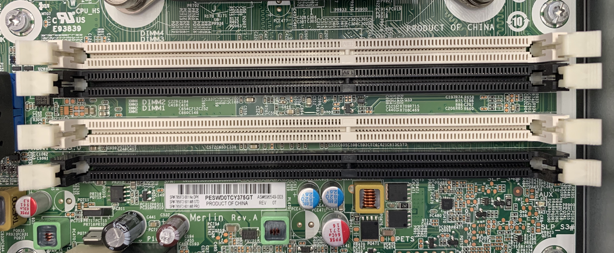
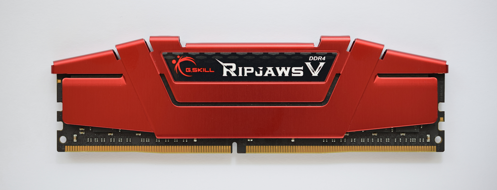
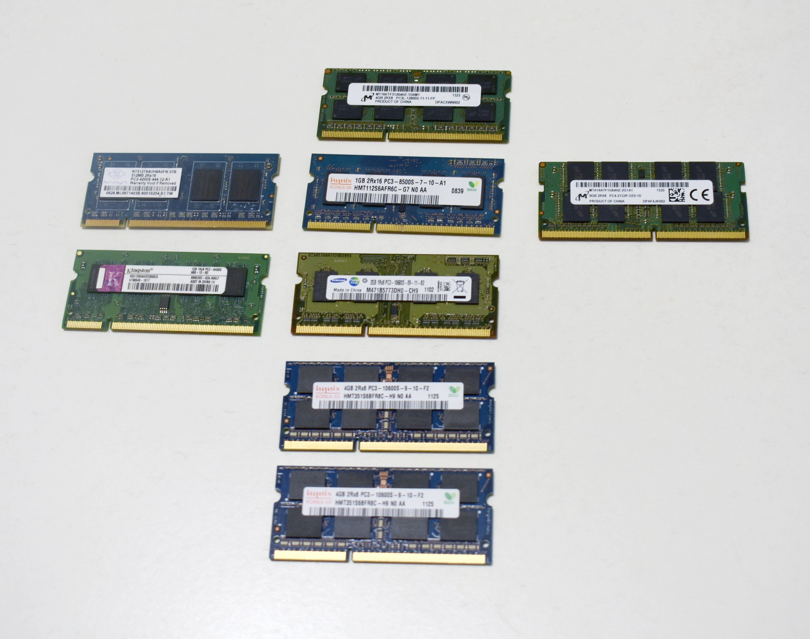
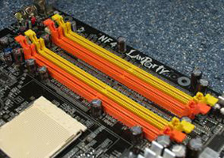
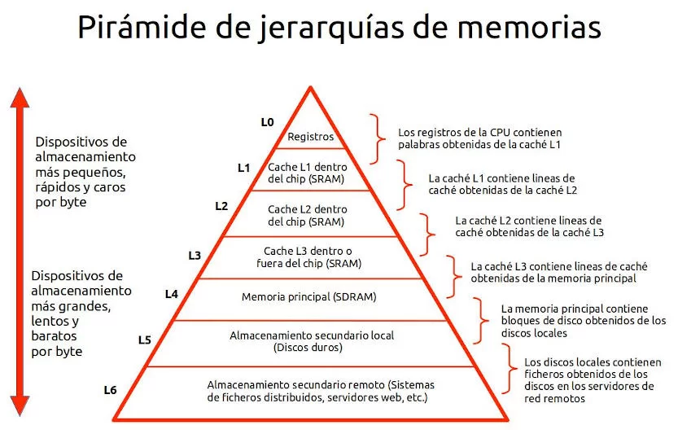

MM U05.1. Memoria RAM
TEMA 5. MEMORIA RAM¶
1. Concepto y vocabulario esencial¶
La memoria RAM es la memoria principal del sistema. Es rápida y volátil: guarda datos y programas en uso, pero se pierde al apagar el equipo. Su objetivo es dar a la CPU un espacio de trabajo inmediato para evitar depender del almacenamiento (mucho más lento).
1.1 Vocabulario fundamental¶
| Término | Definición |
|---|---|
| RAM | Memoria temporal de trabajo del sistema. |
| DRAM | Tipo de RAM basada en condensadores que necesita refresco. |
| DDR | Memoria DRAM que transfiere datos en ambos flancos del reloj. |
| MT/s | Mega transferencias por segundo (medida habitual en DDR). |
| Timings / Latencias | Tiempos de acceso (CL, tRCD, tRP, tRAS) que afectan al rendimiento. |
| Prefetch | Cantidad de datos que se preparan internamente por cada acceso. |
| SPD | Chip con parámetros del módulo para configuración automática. |
| XMP / EXPO | Perfiles de memoria preconfigurados para ajustar parámetros en BIOS. |
| Canal de memoria | Camino de datos entre la CPU y la RAM. |
| Rank | Conjunto lógico de chips que se accede como una unidad. |
| Bank / Bank Group | Subdivisiones internas que permiten paralelismo de accesos. |
| ECC | Memoria con corrección de errores (reducen fallos en servidores). |
| UDIMM / RDIMM | Módulos sin/ con registro (buffer) para estabilidad en servidores. |
| DIMM / SO-DIMM | Formatos físicos de módulos de memoria. |
| QVL | Lista de compatibilidad validada por el fabricante de la placa. |
2. Módulos de memoria y formatos físicos¶
Los módulos de RAM se fabrican en distintos formatos. En sobremesa se usan DIMM y en portátiles SO-DIMM. Cada generación tiene muescas y pines específicos para evitar incompatibilidades.




3. Cómo trabaja la RAM: bancos, filas y ráfagas¶
La DRAM se organiza internamente en una matriz de bancos, filas y columnas. Cada banco es como un “bloque” independiente de memoria, y dentro de cada banco hay miles de filas y columnas. Para acceder a un dato, la RAM realiza un proceso en dos pasos:
- Activar una fila (row activation): se carga el contenido de una fila completa en un pequeño buffer interno.
- Acceder a la columna: una vez la fila está activa, se lee o escribe la columna concreta que se necesita.
Este proceso explica por qué repetir accesos dentro de la misma fila es más rápido que saltar entre filas distintas: abrir y cerrar filas tiene coste de tiempo (latencias como tRCD o tRP).
Para mejorar la eficiencia, la RAM usa:
- Prefetch: trae más datos de los que se piden en un solo acceso. Por ejemplo, DDR4 y DDR5 trabajan con bloques de datos que facilitan lecturas continuas.
- Ráfagas (burst): una vez abierta la fila, se envían varios datos consecutivos sin necesidad de reabrir la fila, aprovechando el acceso ya activado.
- Paralelismo entre bancos: mientras un banco se prepara, otro puede estar leyendo, lo que reduce tiempos de espera.
En resumen, la RAM es rápida cuando se accede a datos cercanos (misma fila/banco) y más lenta cuando hay muchos saltos entre filas. Por eso el rendimiento real depende tanto de cómo el sistema operativo y los programas organizan los datos en memoria.
3.1. Tabla comparativa de generaciones DDR¶
La siguiente tabla resume datos clave de todas las generaciones DDR. Los valores son estándares o rangos habituales (pueden variar por fabricante o plataforma).
| Generación | Pines DIMM | Voltaje estándar | Tasa de transferencia JEDEC (MT/s) | Capacidad habitual por módulo (ejemplos) |
|---|---|---|---|---|
| DDR (DDR1) | 184 | 2,5 V | 200–400 | hasta 1 GB |
| DDR2 | 240 | 1,8 V | 400–1066 | 512 MB–4 GB |
| DDR3 | 240 | 1,5 V / 1,35 V | 800–2133 | hasta 16 GB |
| DDR4 | 288 | 1,2 V | 1600–3200 | 2–32 GB (UDIMM) |
| DDR5 | 288 | 1,1 V | 4800–6400 | 8–48 GB (UDIMM) |
4. Generaciones DDR y compatibilidad¶
Cada generación de DDR mejora rendimiento y eficiencia, pero no es compatible físicamente con la anterior. Por eso es importante elegir el tipo correcto según la placa base.
| Generación | Rasgo clave | Compatibilidad |
|---|---|---|
| DDR3 | Menor consumo que DDR2 | No compatible con DDR4/DDR5 |
| DDR4 | Mejor eficiencia y densidad | No compatible con DDR5 |
| DDR5 | Nuevas mejoras internas y subcanales | No compatible con DDR4 |
5. Rendimiento práctico: capacidad, canales y perfiles¶
El rendimiento real no depende solo de la velocidad, sino de tres factores principales:
- Capacidad: cuanto mayor es, menos depende el sistema del disco.
- Canales: usar dos módulos compatibles en dual channel mejora el ancho de banda.
- Perfiles (XMP/EXPO): permiten aplicar ajustes validados desde BIOS. En la práctica son perfiles preconfigurados que guardan frecuencias, latencias y voltajes probados por el fabricante del módulo. Activarlos en BIOS/UEFI evita tener que introducir manualmente cada parámetro y reduce errores de configuración. En equipos de sobremesa es común ver varios perfiles (por ejemplo, uno “básico” y otro de mayor rendimiento), y conviene elegir el que sea compatible con la placa y el procesador. Si el sistema no es estable, se recomienda volver al perfil estándar (JEDEC) o bajar a un perfil intermedio.
Ejemplo práctico (pasos generales en BIOS/UEFI):
- Entrar en BIOS/UEFI (tecla típica: Supr, F2 o F10 al arrancar).
- Ir a la sección AI Tweaker / OC / Memory (el nombre varía según el fabricante).
- Localizar la opción XMP (Intel) o EXPO (AMD).
- Seleccionar Perfil 1 (o el recomendado por el fabricante del módulo).
- Guardar cambios y reiniciar.
Si al reiniciar aparecen inestabilidades o reinicios, volver a BIOS y seleccionar perfil estándar JEDEC o reducir el perfil a uno inferior.

5.1. Dual, triple y quad channel (explicación práctica)¶
El modo multicanal aumenta el ancho de banda de la memoria al permitir que la CPU acceda a varios canales en paralelo. Esto es especialmente útil en cargas intensivas (juegos, edición de vídeo, virtualización o análisis de datos).
- Single channel: la memoria trabaja en un solo canal. Es la situación típica con un único módulo. El rendimiento es correcto, pero el ancho de banda es el mínimo disponible.
- Dual channel: al instalar dos módulos iguales en ranuras específicas, la controladora accede a dos canales simultáneos. En muchos casos se observa una mejora real en tareas que usan mucha RAM.
- Triple channel: usado en algunas plataformas antiguas de alto rendimiento. Requiere tres módulos iguales y un chipset/controladora compatible. Su ventaja es aumentar el ancho de banda frente a dual.
- Quad channel: habitual en estaciones de trabajo y servidores. Requiere cuatro módulos compatibles y ofrece el mayor ancho de banda del grupo, ideal para tareas profesionales o científicas.
Recomendaciones prácticas:
- Instala módulos idénticos en capacidad y velocidad (por ejemplo, 2x16 GB) para asegurar el modo multicanal.
- Respeta el orden de ranuras indicado por la placa (suelen venir marcadas con colores o manual).
- Si mezclas módulos distintos, la placa puede bajar la velocidad a la del módulo más lento o desactivar el multicanal.
- En portátiles, el modo dual puede activarse con dos módulos o con módulos “soldados + ampliación” si la plataforma lo soporta.
6. SPD y configuración automática¶
Cada módulo incluye un chip SPD con los parámetros recomendados por el fabricante. La BIOS/UEFI lee estos datos y ajusta la memoria de forma automática.
7. ECC y fiabilidad¶
La memoria ECC detecta y corrige errores de datos. Se usa sobre todo en servidores y equipos críticos. Para que funcione es necesario que CPU, placa y módulos sean compatibles.
8. Jerarquía de memoria¶
La RAM se sitúa entre la caché de la CPU y el almacenamiento. Es un punto de equilibrio entre velocidad y capacidad.

9. Compatibilidad e instalación (checklist)¶
- Verifica el tipo DDR compatible con la placa.
- Comprueba el formato físico (DIMM o SO-DIMM).
- Instala módulos en ranuras recomendadas para dual channel.
- Activa XMP/EXPO si el sistema lo soporta.
- Revisa la QVL del fabricante para evitar incompatibilidades.
10. Diagnóstico básico de problemas¶
Síntomas frecuentes: - El equipo no arranca. - Se reconoce menos memoria de la instalada. - Aparecen reinicios o errores aleatorios.
Pasos típicos: 1. Probar módulos por separado. 2. Cambiar de ranura. 3. Revisar compatibilidad y ajustes en BIOS.
11. Resumen final¶
- La RAM es la memoria principal y es volátil.
- El formato del módulo y el tipo DDR deben ser compatibles con la placa.
- El dual channel mejora el rendimiento.
- SPD, XMP y EXPO simplifican la configuración.
12. Referencias¶
- Crucial – What is RAM and what does RAM do?: https://www.crucial.com/articles/about-memory/support-what-does-computer-memory-do
- JEDEC – SPD (Serial Presence Detect) announcement: https://www.businesswire.com/news/home/20200302005918/en/JEDEC-Announces-Publication-of-a-New-Serial-Presence-Detect-Device
- Intel – XMP (Extreme Memory Profile): https://www.intel.com/content/www/us/en/gaming/extreme-memory-profile-xmp.html
- AMD – EXPO (Extended Profiles for Overclocking): https://www.amd.com/en/products/processors/technologies/expo.html
- Wikipedia – DDR‑SDRAM (tabla comparativa de generaciones DDR): https://de.wikipedia.org/wiki/DDR-SDRAM
- Wikipedia – DDR SDRAM (pines y capacidad máxima por módulo): https://es.wikipedia.org/wiki/DDR_SDRAM
- Wikipedia – DDR3 SDRAM (DIMM 240 pines y módulos hasta 16 GiB): https://es.wikipedia.org/wiki/DDR3_SDRAM
- Intelligent Memory – DDR2 módulos (capacidades típicas): https://www.intelligentmemory.com/products/dram-modules/ddr2
- Intelligent Memory – DDR4 módulos (capacidades típicas UDIMM): https://www.intelligentmemory.com/products/dram-modules/ddr4
- Silicon Power – DDR5 UDIMM (capacidades típicas): https://www.silicon-power.com/web/us/product-DDR5_UDIMM
- Wikimedia Commons – RAM Module (DDR4): https://commons.wikimedia.org/wiki/File:RAM_Module_(SDRAM-DDR4).jpg
- Wikimedia Commons – DDR5 SDRAM module: https://commons.wikimedia.org/wiki/File:DDR5_SDRAM_IMGP6295_smial_wp.jpg
- Wikimedia Commons – Assorted SO-DIMM Modules: https://commons.wikimedia.org/wiki/File:Assorted_SO-DIMM_Modules.jpg
- Wikimedia Commons – Four SDRAM DIMM slots on motherboard: https://commons.wikimedia.org/wiki/File:Four_SDRAM_DIMM_slots_on_a_computer_motherboard.jpg
- Wikimedia Commons – Dual channel slots: https://commons.wikimedia.org/wiki/File:Dual_channel_slots.jpg
Fecha de actualización: 14/02/2026